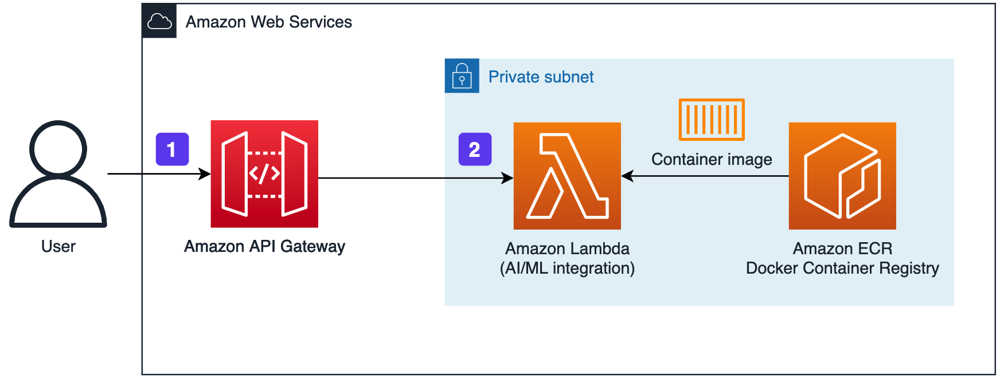
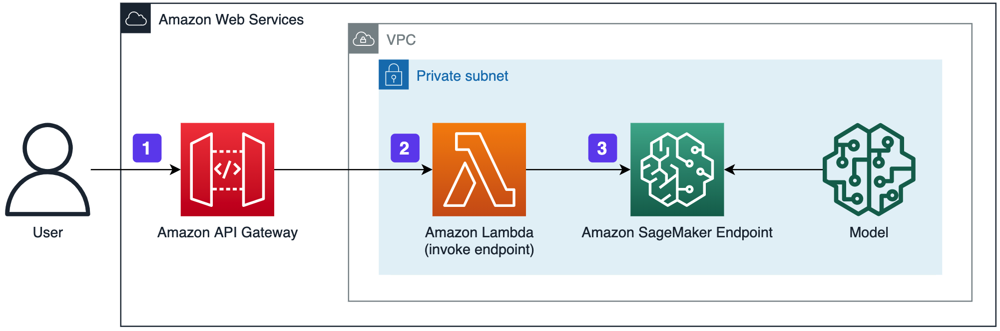

常见问题
这个解决方案是什么？
本解决方案提供了一系列云上 AI 功能，如：通用文本识别、图像超分辨率、色情图片审核、智能人像分割等。客户可以进行一键式私有化部署。AI 功能将以 API 的形式提供，客户可以直接调用 API 或使用软件开发工具包（SDK）调用服务。
这个解决方案的适用于什么场景？
- 通用文本识别：可应用于纸质文档电子化，证件识别，内容审核等多种场景。
- 内容审核-色情图片：可应用于社交应用、论坛、社区等需要自动审核图像的场景，提升平台内容质量。
- 图像超分辨率：可应用于需要对原始图片提升分辨率的场景，如拍照效果增强、文字档案翻拍、医学图像处理等场景。也可在工业自动化领域用于提高传感器成像精度，提高识别率。
- 智能人像分割：可应用于照片背景替换、证件照制作，人像抠图美化等场景。
这个解决方案的是如何运作的？
用户或程序发送 API 请求至 Amazon API Gateway，请求 payload 中需要包含被处理的图片或文字信息，Amazon API Gateway 接收到 HTTP 到请求后，将请求数据发送给对应的 Lambda 函数或 SageMaker Endpoint，从而实现推理过程，并将推理结果（通常为JSON格式数据）返回。
本解决方案架构中包含两类 AI 功能的实现方式（SageMaker 架构只适用于图像超分辨率方案）
-
基于Lambda 实现： Amazon API Gateway 将接收到的用户请求直接发送给 Lambda 函数，Lambda 函数通过调用存储在 Amazon EFS 里面的模型完成推理计算，最后将结果返回给调用端。 
-
SageMaker 实现： 首先 API Gateway 将用户请求发送到 Lambda（invoke endpoint）函数，通过 Lambda 调用 SageMaker Endpoint，在 SageMaker 中执行推理过程并返回推理结果。 
我需要在启动前注意哪些前提条件？
- 确保您拥有一个已经ICP备案的域名。
此解决方案支持在哪些区域运行？
您可以部署到 Amazon Web Service 全球主要区域，包括由西云数据运营的 Amazon Web Service （宁夏）区域和由光环新网运营的 Amazon Web Service （北京）区域。
如何快速开始使用这个方案？
用户可以在直接部署页面的部署按钮开始部署。详情请见部署手册。
使用这个解决方案后续的开发量是多少？
用户部署本解决方案后，需要按请求 HTTP 接口说明，开发相应接口的调用功能，也可以在 Amazon API Gateway 中生成相应 SDK 代码，与业务逻辑集成。